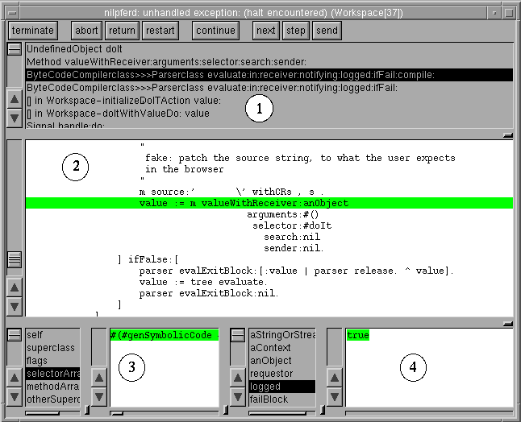

It is also possible, to enter the debugger by pressing the interrupt key "Pause" or "Interrupt" in any Smalltalk window. In some older Unix configurations, use: "Ctrl-c". Also, for compatibility with other Smalltalk dialects, such as Squeak or ObjectWorks, the "Ctrl-." and "Alt-." keys are also treated as interrupt keys. This stops the corresponding process and opens a debugger on it. If you started ST/X with a controlling terminal window (console), pressing "Ctrl-c" there also interrupts the currently active process, but may lead you directly into a low-level MiniDebugger, which is described below.
You can also place a method-entry breakpoint on any method via the browser's breakpoint menu (the red traffic light button) or a line breakpoint in a code editor's line number area.
Finally, a programmed stop is added by placing a "halt", "breakPoint" or
"assert"-message into the code.
These messages are implemented in the Object class and therefore understood by every object.
self halt
Under normal conditions, the system does never enter this model debugger (we worked hard to avoid it, by caring for most possible errors in the event handling code). However, it may happen if you place a halt or breakpoint into the event handler's control flow.
Inspecing debuggers are especially useful to inspect blocked processes, and allow to resume them, by signalling the semaphore the process is waiting for. Also endlessly looping processes can be forced to abort the current action. Finally, the process can also be completely terminated.
The process monitor offers a pop up menu function to start an inspecting debugger on any process (or simply double click on a process entry in its list).
Any number of these inspecting debugViews may be open concurrently.

The actual appearance of the debugger depends on the viewStyle setting; the picture above was taken with the "Silicon Graphics iris-style" in effect, and is also quite old.
The subviews are:
Selecting a context in this list will show the corresponding method's source in the method source view, and updates the receiver- and context inspectors.
The recevier inspector (left) shows the receiver of the selected message; the context inspector (right) provides information about the arguments and local variables of this context.
The method source view highlights the current position of execution.
This view is a codeView - which means that you can change the code and "accept"
to change the method (i.e. fix errors and compile).
However, once accepted, the source code of the method is no longer in sync with
the state of the process (that one is still suspended in the previous, old code).
If the process is resumed, it will continue executing code from the original method,
until the same message is sent again. Then, any new accepted code will be executed.
Therefore, after any change, it is common to not proceed, but instead resend the current message
(for which a separate button exists in the action panel).
To avoid confusion, the debugger shows an indicator and toggle to switch between the
original and the accepted code.
You can also evaluate expressions (like in a workspace) in any of the views. Variable references are resolved as usual (i.e. you can refer to local variables, class variables, instance variables etc. as if the code was written in a normal method) (3).
(2) Actually, there are additional contexts which are hidden from this list by default. For example, if a "division by zero" error happens, the division operation method raises a ZeroDivide exception, which looks for a handler and finally raises an UnhandledException-exception. This finally enters the debugger. All those exception handling helpers are not shown by default, and the debugger presents the place of the divide as the top most context. Unless you are debugging the exception handling mechanism itself, this is usually the preferred presentation, as you as a developer are interested in the division error, not its handling. You can change this behavior (and make all contexts visible) via the debugger's view menu entry "Show Support Code".
In addition, contexts for some support code, such as block-values in enumerations and other helpers are hidden by default. To show them, turn off the "Show Dense Walkback" toggle in the same menu.
(3) Ocasionally, the debugger has trouble with this, as the compiler(s) move local variables of inlined blocks into their surrounding context (i.e. a local variable within an ifTrue:[]-block is typically moved to the method's stack frame). Also, some inner blocks are actually compiled either inline or otherwise compiled more efficient (lambda lifted) and the debugger has not been implemented clever enough to figure out all such situations. Although trying hard, the debugger sometimes gets a wrong idea of where the variable is actually located, as it may not know about all optimizations done by the compilers, especially with "stc" compiled code. This is a known weakness (call it "a little bug"), with which we have to live (for now). In practice, such situations do occur, but are usually not limiting the programmer's productivity.
Continue in "Button Functions"...
 Copyright © 1995 Claus Gittinger Development & Consulting, all rights reserved
Copyright © 1995 Claus Gittinger Development & Consulting, all rights reserved
<cg@exept.de>